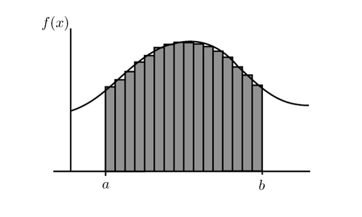
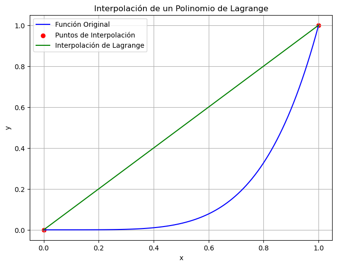
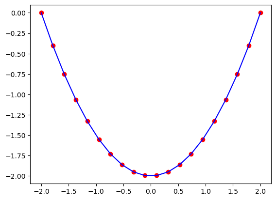
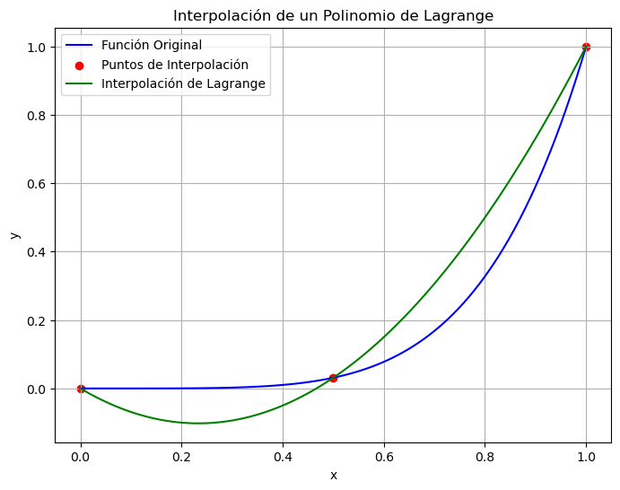
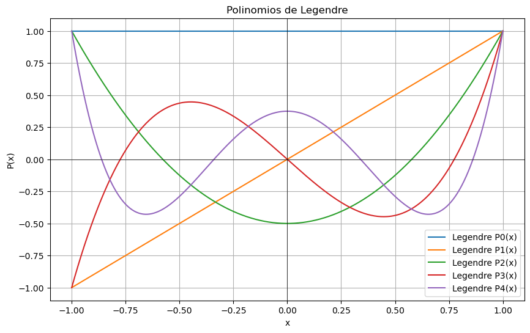

La integración numerica es una herramienta muy importante en la computación cientifica, esta l podemos dividir en dos grandes grupos
Integración de Newton Cotes.
Integración de cuadraturas.
En la primera usamos la aproximación usando interpolación de polinomios, en la segunda usamos proyección de los polinomios. Vamos ver algunos ejemplos y algoritmos para cada uno de los casos.
integración de Newtos cotes
En el pasado uno de los primeros métodos para aproximar el área de una curva se usaba el método de Exhausción, que posteriormente se transformo en las sumas de Riemman, este método consiste en aproximar el área de una curva usando rectángulos, como se muestra en la siguiente figura.

sumas de Riemman
Este tal vez fue el primer método numérico para aproximar integrales numéricas. En este punto nos surge diferentes preguntas, ¿qué tan buena son esas aproximaciones?, ¿se puede mejorar?, ¿cual es el error asociado a la aproximación? ¿Cómo lo cálculo?
Para poder responder cada una de estas preguntas, vamos a aproximar la integrar en un simple intervalo \([a,b]\) usando diferentes aproximaciones,
La regla del trapecio
Suponemos que tenemos un función continua en un intervalo \([a,b]\), vamos a aproximar este función usando los polinomios de Lagrange, como se muestra en la figura
import numpy as npimport matplotlib.pyplot as plt# Define la función original que deseas interpolardef original_function(x):return x**5# Ejemplo: Función seno# Puntos de interpolaciónx_points = np.array([0, 1])y_points = original_function(x_points)# Puntos en el dominio para trazar la función originalx_values = np.linspace(0, x_points[-1], 100)y_values = original_function(x_values)# Polinomio de Lagrangedef lagrange_interpolation(x, x_points, y_points): n =len(x_points) result =0for j inrange(n): term = y_points[j]for i inrange(n):if i != j: term *= (x - x_points[i]) / (x_points[j] - x_points[i]) result += termreturn result# Valores interpolados utilizando el polinomio de Lagrangey_interpolated = lagrange_interpolation(x_values, x_points, y_points)# Gráfica de la función original y la interpolación de Lagrangeplt.figure(figsize=(8, 6))plt.plot(x_values, y_values, label="Función Original", color='blue')plt.scatter(x_points, y_points, label="Puntos de Interpolación", color='red')plt.plot(x_values, y_interpolated, label="Interpolación de Lagrange", color='green')plt.xlabel("x")plt.ylabel("y")plt.legend()plt.title("Interpolación de un Polinomio de Lagrange")plt.grid(True)plt.show()

De esta forma, podemos aproximar la función
\[f(x)\approx\frac{x-x_1}{x_0-x_1}+E(x),\] donde \(E(x)\) representa el error asociado a la aproximación. De esta forma al integrar sobre el intervalo \([x_0,x_1]\) tenemos
haciendo \(u=x-x_0\) in la primera integral, tenemos \[\begin{align}\int_{x_0}^{x_1}f(x)\ dx&=\frac{1}{\Delta x}\Big(y_1\int_{0}^{\Delta x}(u)dx-y_0\int_{0}^{\Delta x}(u-\Delta x)dx\Big)+\int_{x_0}^{x_1}E(x)dx\\
&=\frac{1}{\Delta x}\Big(\frac{\Delta^2 x}{2}y_1-\Big(\frac{\Delta^2x}{2}+\Delta^2 x\Big)y_0\Big)+\int_{x_0}^{x_1}E(x)dx\\
&=\frac{\Delta x}{2}\Big(y_0+y_1\Big)+\int_{x_0}^{x_1}E(x)dx \end{align},\]
Código
import numpy as npdef f(x):# Define the function you want to integrate herereturn x**5# Example: x^2def trapezoidal_rule_numpy(f, a, b, n): h = (b - a) / n x = np.linspace(a, b, n +1) y = f(x) integral = h * (y[0] /2+ np.sum(y[1:n]) + y[n] /2)return integrala =0# Lower bound of integrationb =2# Upper bound of integrationn =9# Number of subintervalsresult = trapezoidal_rule_numpy(f, a, b, n)print("Approximate integral:", result)
from scipy import integrateimport numpy as npimport matplotlib.pyplot as pltx = np.linspace(-2, 2, num=20)y = xprint(integrate.trapezoid(y,x))y_int = integrate.cumulative_trapezoid(y, x, initial=0)plt.plot(x, y_int, 'ro', x, y[0] +0.5* x**2, 'b-')plt.show()
-5.551115123125783e-17

Note, toda función se puede aproximar
la función
\[f(x)\approx P_n+E(x)\] donde el \(P_n(x)\) es el polinomio de Lagrange de grado \(n\) que interpola un conjunto de \(n+1\) puntos \((x_0, y_0), (x_1, y_1), \ldots, (x_n, y_n)\) en el dominio \(x\) y codominio \(y\) está dado por: \[ P_n(x) = \sum_{k=0}^n y_k \cdot L_k(x). \] Con \(L_k(x)\) es el término de Lagrange correspondiente a \(x_k\), y se define como: \[ L_k(x) = \prod_{i=0, i\neq k}^n \frac{x - x_i}{x_k - x_i} \]
El error de interpolación \(E(x)\) al utilizar un polinomio de Lagrange de grado \(n\) para aproximar una función \(f(x)\) en el punto \(x\) está dado por: \[ E(x) = \frac{f^{(n+1)}(c)}{(n+1)!} \cdot \omega(x) \] Donde: - \(f^{(n+1)}(c)\) es la \((n+1)\)-ésima derivada de \(f(x)\) en algún punto \(c\) dentro del intervalo de interpolación. - \(\omega(x) = (x - x_0)(x - x_1) \cdots (x - x_n)\) se conoce como el “producto ponderado” y está relacionado con la diferencia finita.
import numpy as npimport matplotlib.pyplot as plt# Define la función original que deseas interpolardef original_function(x):return x**5# Ejemplo: Función seno# Puntos de interpolaciónx_points = np.array([0, 0.5,1])y_points = original_function(x_points)# Puntos en el dominio para trazar la función originalx_values = np.linspace(0, x_points[-1], 100)y_values = original_function(x_values)# Polinomio de Lagrangedef lagrange_interpolation(x, x_points, y_points): n =len(x_points) result =0for j inrange(n): term = y_points[j]for i inrange(n):if i != j: term *= (x - x_points[i]) / (x_points[j] - x_points[i]) result += termreturn result# Valores interpolados utilizando el polinomio de Lagrangey_interpolated = lagrange_interpolation(x_values, x_points, y_points)# Gráfica de la función original y la interpolación de Lagrangeplt.figure(figsize=(8, 6))plt.plot(x_values, y_values, label="Función Original", color='blue')plt.scatter(x_points, y_points, label="Puntos de Interpolación", color='red')plt.plot(x_values, y_interpolated, label="Interpolación de Lagrange", color='green')plt.xlabel("x")plt.ylabel("y")plt.legend()plt.title("Interpolación de un Polinomio de Lagrange")plt.grid(True)plt.show()

Regla de Simpsons
\(1/3\)
Haciendo la interpolación de un polinomio de segundo orden el intervalo \([x_0,x_2]\), usando el procedimiento anterior obtenemos la formula
\[\int_{x_0}^{x_2}f(x)\ dx\approx \frac{\Delta x}{3}\Big(f(x_0)+4f(x_1)+f(x_2)\Big).\] Con error
\[ E_f=-\frac{\Delta^5 x}{90}f^{(4)}(\xi),\]
de esta forma \[|E_f|\leq \frac{\Delta^5 x}{90}max_{a\leq\xi\leq b}|f^{(4)}(\xi)|.\]
Regla de Simpson \(1/3\) compuesta
En el caso de un intervalo \([a,b]\), haciendo una partición equidistante
import numpy as npdef f(x):# Define the function you want to integrate herereturn x**5# Example: x^2def simpsons_rule_numpy(f, a, b, n):if n %2!=0:raiseValueError("Number of subintervals (n) must be even for Simpson's Rule.") h = (b - a) / n x = np.linspace(a, b, n +1) y = f(x) integral = h /3* (y[0] +4* np.sum(y[1:n:2]) +2* np.sum(y[2:n-1:2]) + y[-1])return integrala =0# Lower bound of integrationb =2# Upper bound of integrationn =10# Number of subintervals (should be even)result = simpsons_rule_numpy(f, a, b, n)print("Approximate integral:", result)
Approximate integral: 10.668800000000003
\(3/8\)
Haciendo la interpolación de un polinomio de segundo orden el intervalo \([x_0,x_3]\), usando el procedimiento anterior obtenemos la formula
\[\int_{x_0}^{x_3}f(x)\ dx\approx \frac{3\Delta x}{8}\Big(f(x_0)+3f(x_1)+3f(x_2)+f(x_3)\Big).\] Con error
\[ E_f=-\frac{3\Delta^5 x}{80}f^{(4)}(\xi),\]
de esta forma \[|E_f|\leq \frac{3\Delta^5 x}{80}max_{a\leq\xi\leq b}|f^{(4)}(\xi)|.\]
Regla de Simpson \(1/3\) compuesta
En el caso de un intervalo \([a,b]\), haciendo una partición equidistante
import numpy as npimport matplotlib.pyplot as plt# Define la función original que deseas interpolardef original_function(x):return x**5# Ejemplo: Función seno# Puntos de interpolaciónx_points = np.array([0, 0.25,0.5,0.75])y_points = original_function(x_points)# Puntos en el dominio para trazar la función originalx_values = np.linspace(0, x_points[-1], 100)y_values = original_function(x_values)# Polinomio de Lagrangedef lagrange_interpolation(x, x_points, y_points): n =len(x_points) result =0for j inrange(n): term = y_points[j]for i inrange(n):if i != j: term *= (x - x_points[i]) / (x_points[j] - x_points[i]) result += termreturn result# Valores interpolados utilizando el polinomio de Lagrangey_interpolated = lagrange_interpolation(x_values, x_points, y_points)# Gráfica de la función original y la interpolación de Lagrangeplt.figure(figsize=(8, 6))plt.plot(x_values, y_values, label="Función Original", color='blue')plt.scatter(x_points, y_points, label="Puntos de Interpolación", color='red')plt.plot(x_values, y_interpolated, label="Interpolación de Lagrange", color='green')plt.xlabel("x")plt.ylabel("y")plt.legend()plt.title("Interpolación de un Polinomio de Lagrange")plt.grid(True)plt.show()
import numpy as npdef f(x):# Define la función que deseas integrar aquíreturn x**5# Ejemplo: x^2def simpsons_3_8_rule_numpy(f, a, b, n):if n %3!=0:raiseValueError("El número de subintervalos (n) debe ser múltiplo de 3 para la regla de Simpson 3/8.") h = (b - a) / n x = np.linspace(a, b, n +1) y = f(x) integral = (3* h /8) * (y[0] +3* np.sum(y[1:n-2:3]) +3* np.sum(y[2:n-1:3]) +2* np.sum(y[3:n-3:3]) + y[n])return integrala =0# Límite inferior de integraciónb =2# Límite superior de integraciónn =9# Número de subintervalos (múltiplo de 3)result = simpsons_3_8_rule_numpy(f, a, b, n)print("Integral aproximada:", result)
Usando Scipy
from scipy import integrateimport numpy as npx = np.arange(0, 10)y = np.arange(0, 10)integrate.simpson(y, x)
Cuadratura de Gauus
Polinomios de Legendre
La primera traslación de los polinomios de Legendre es:
grado
Polinomio
0
1
1
\(2x-1\)
2
\(6x^26x+1\)
3
\(20x^3-30x^2+12x-1\)
import numpy as npimport matplotlib.pyplot as pltdef legendre_polynomial(n, x):if n ==0:return1elif n ==1:return xelse: P0 =1 P1 = xfor k inrange(2, n +1): Pn = ((2* k -1) * x * P1 - (k -1) * P0) / k P0 = P1 P1 = Pnreturn Pnx = np.linspace(-1, 1, 400)plt.figure(figsize=(10, 6))for n inrange(5): y = [legendre_polynomial(n, xi) for xi in x] plt.plot(x, y, label=f'Legendre P{n}(x)')plt.title("Polinomios de Legendre")plt.xlabel("x")plt.ylabel("P(x)")plt.grid(True)plt.axhline(0, color='black', lw=0.5)plt.axvline(0, color='black', lw=0.5)plt.legend()plt.show()

Note que de esta forma podemos interpolar una función en el intervalo \([-1,1]\) como la siguiente forma
Algunas ventajas de La integración con polinomios de Legendre, a menudo utilizada en conjunción con la fórmula de cuadratura de Gauss-Legendre, tiene varias ventajas:
Alta precisión: La cuadratura de Gauss-Legendre es conocida por su alta precisión. A menudo, proporciona una aproximación muy precisa de integrales, incluso con un número relativamente pequeño de puntos de integración.
Eficacia: Para un número dado de nodos de Gauss-Legendre, este método suele ser más eficaz y preciso que otros métodos de cuadratura numérica, como la regla del trapecio o la regla de Simpson. Esto significa que requiere menos evaluaciones de la función para alcanzar una determinada precisión.
No necesita una malla uniforme: A diferencia de otros métodos, como la cuadratura de Newton-Cotes, no necesita que el intervalo de integración se divida en subintervalos de longitud uniforme. Puede tratar intervalos no uniformes y curvas de forma eficiente.
Funciona bien para funciones singulares: La cuadratura de Gauss-Legendre también es adecuada para integrar funciones que pueden tener singularidades en los puntos finales del intervalo, lo que puede ser problemático para otros métodos de integración.
Polinomios ortogonales: Los nodos de Gauss-Legendre son raíces de los polinomios de Legendre, que son ortogonales en el intervalo de integración ([-1, 1]). Esta propiedad ayuda a minimizar el error de aproximación y hace que el método sea robusto y preciso.
Amplia aplicabilidad: La cuadratura de Gauss-Legendre se puede aplicar a una amplia variedad de funciones y problemas de integración, lo que la hace útil en diversas áreas de la ciencia y la ingeniería.
En resumen, la integración con polinomios de Legendre y la cuadratura de Gauss-Legendre son técnicas poderosas y ampliamente utilizadas para calcular integrales numéricamente con alta precisión, especialmente en situaciones en las que se requiere una aproximación precisa o cuando se trabaja con funciones complicadas o no uniformes.
import numpy as npfrom scipy import integrateprint(integrate.fixed_quad(np.sin, 0.0, np.pi/4, n=5))